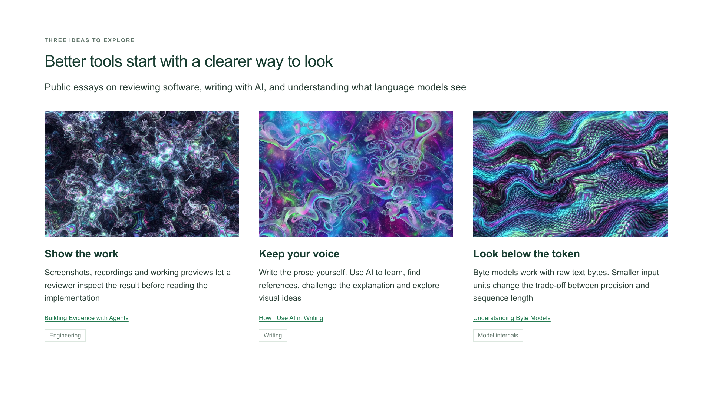

01 · HUMAN ↔ AGENT
Ideate
Rapid open-ended quick discussions on ideas.
Let your agents do the grunt work while you develop compelling presentations and visuals
Paste the below into your AI
Find dwmkerr/slides, quickly build me a deck to get started and teach me how to use it
I'll scaffold the pages for your presentation and then you can edit them and let me know what you want to change.
Eight editorial layouts with large images, columns, rows, checklists and timelines. Left/right follows the story; up/down compares alternatives.
Open the layout pack →
This is a space for an introduction. One or two sentences on who these people are and why they belong together.
This is a space for some extra commentary or links.
This is a space for an introduction. One or two sentences on who these people are and why they belong together.
This is a space for some extra commentary or links.
This is a space for an introduction. One or two sentences on who these people are and why they belong together.
This is a space for some extra commentary or links.
Find out moreThis is a space for a short note.
This is a space for an introduction. One or two sentences on who these people are and why they belong together.
This band is a space for a call to action, with a button beside it.
Find out moreThis is a space for an introduction. One or two sentences on who these people are and why they belong together. This page scrolls, so it can hold more than a slide.
| Person one | Tuesdays, 10:30-12:30 |
| Person two | Thursdays, 14:00-16:00 |
| A shared publication | example.com |
| A personal site | example.org |
Press E to edit text. When the deck is served, changes save to the HTML file.
Press C to leave a comment for your agent.
Add a <style data-slides-theme> block for each theme and the menu shows a toggle.
Print from the browser to get one 16:9 page per slide.
slides check deck.html reports broken assets and slides that overflow.
slides export deck.html --slides 1,3-5 exports selected slides to PDF.